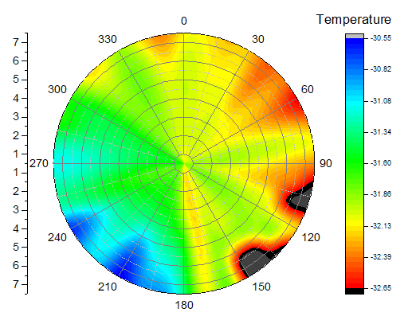
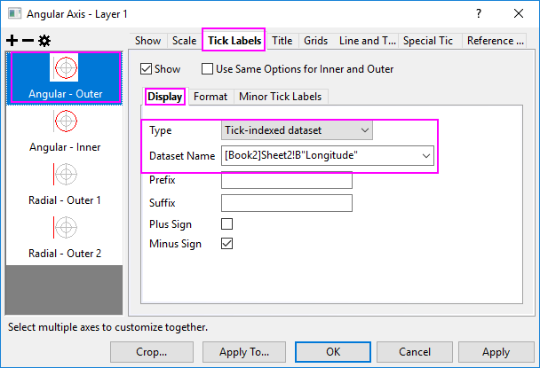
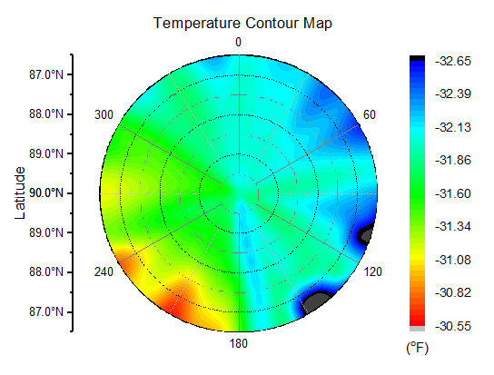

Polares Konturdiagramm
Polar-Contour
Zusammenfassung
Dieses Tutorial zeigt Ihnen, wie Sie ein polares Konturdiagramm sowohl aus XYZ-Arbeitsblattdaten als auch aus Matrixdaten erstellen.
Was Sie lernen werden
- Ein polares Konturdiagramm aus XYZ-Daten bzw. Matrixdaten erstellen
- Das Diagramm mit dem Dialog Details Zeichnung benutzerdefiniert anpassen
Schritte
Polares Konturdiagramm aus XYZ-Daten zeichnen
- Wählen Sie im Menü Hilfe: Lernzentrum oder drücken Sie die Taste F11, um das Lernzentrum zu öffnen. Wählen Sie die Registerkarte Diagrammbeispiel und wählen Sie dann Polardiagramme in der Auswahlliste. Klicken Sie doppelt auf das Diagrammbeispiel unten, um das Beispiel "Polar Chart - Polar Contour" zu öffnen.
Hinweis: Dieses Tutorial ist mit dem Ordner Polar Contour des Projekts "Tutorial Data" verbunden: <Origin EXE Folder>\Samples\Tutorial Data.opj.
- Aktivieren Sie das erste Arbeitsblatt der Arbeitsmappe Temperature and Location, das die Daten zu Temperatur und Standort enthält, und markieren Sie Spalte C. Wählen Sie Zeichnen: Kontur: Polar Kontur Theta(X) r(Y) im Menü, um ein polares Konturdiagramm zu erstellen. Das Diagramm sollte folgendermaßen aussehen:
 - Als Nächstes passen wir das Konturdiagramm mit den Minisymbolleisten benutzerdefiniert an. Klicken Sie auf das Konturdiagramm und dann in der Minisymbolleiste auf die Schaltfläche Farbabbildung spiegeln , um die Farbreihenfolge der Farbabbildung umzukehren.
- Klicken Sie auf die Winkelachse (die kreisförmige Bogenkante des Polardiagramms) und in der Minisymbolleiste auf die Schaltfläche Achsenskalierung
 , um den Dialog Achsenskalierung. Setzen Sie in diesem Dialog bei ausgewählter Winkelachse das Hilfsstrichsinkrement auf 60; setzen Sie bei ausgewählter Radialachse die Werte von Von und Bis auf 0 und 7 und das Hilfsstrichsinkrement auf 2.
, um den Dialog Achsenskalierung. Setzen Sie in diesem Dialog bei ausgewählter Winkelachse das Hilfsstrichsinkrement auf 60; setzen Sie bei ausgewählter Radialachse die Werte von Von und Bis auf 0 und 7 und das Hilfsstrichsinkrement auf 2.
- Als Nächstes öffnen wir den Dialog Achsen, um weitere Anpassungen für die Achsen und Achsenbeschriftungen vorzunehmen. Klicken Sie doppelt auf die Radialachse, um den Dialog Achsen zu öffnen. Wechseln Sie zur Registerkarte Beschriftung der Hilfsstriche. Drücken Sie die Strg-Taste und wählen Sie im linken Bedienfeld Radial - Äußere 1 und Radial - Äußere 2. Gehen Sie im rechten Bedienfeld zur Registerkarte Anzeige, wählen Sie Datensatz mit indizierten Hilfsstrichen in der Auswahlliste Typ und dann [Book2]Sheet2!A"Latitude" in der Auswahlliste Datensatzname.
Wählen Sie Winkel - Außen im linken Bedienfeld. Gehen Sie im rechten Bedienfeld zur Registerkarte Anzeige, wählen Sie Datensatz mit indizierten Hilfsstrichen in der Auswahlliste Typ und dann [Book2]Sheet2!B"Longitude" in der Auswahlliste Datensatzname.
 - Klicken Sie auf die Schaltfläche Anwenden. Wechseln Sie zur Registerkarte Gitternetze und stellen Sie sicher, dass Radial im linken Bedienfeld ausgewählt ist. Bearbeiten Sie die Dialogeinstellungen wie im folgenden Bild zu sehen. Bestätigen Sie mit OK, um den Dialog Achsen zu schließen.
- Klicken Sie doppelt auf die Farbskala, um den Dialog Eigenschaften Farbskala zu öffnen und folgende Einstellungen vorzunehmen.
- Setzen Sie auf der Seite Beschriftungen die Schriftgröße auf 20.
- Deaktivieren Sie auf der Seite Layout das Kontrollkästchen Umgekehrte Reihenfolge und legen Sie die Dicke der Farbbalken auf 100.
- Geben Sie auf der Seite Titel (\+(o)F) unter Titel ein. Dies wird mit (oF) als die Einheit für Temperatur angezeigt. Setzen Sie die Position auf Unten.
- Deaktivieren Sie auf der Seite Linie und Hilfsstriche die Kontrollkästchen Linie und Hilfsstriche rechts zeigen und Rand zeigen. Klicken Sie auf OK, um die Einstellung zu speichern, und schließen Sie den Dialog.
Hinweis: Der Text, der für Titel verwendet wird, ist (\+(o)F). Dies soll (oF) angezeigt werden - als Einheit für Temperatur. - Fügen Sie den Diagrammtitel Temperature Contour Map und den Achsentitel Latitude zu dem Diagramm hinzu. Das Diagramm sollte folgendermaßen aussehen:

Polares Konturdiagramm aus Matrixdaten zeichnen
- Wählen Sie im Menü Hilfe: Lernzentrum oder drücken Sie die Taste F11, um das Lernzentrum zu öffnen. Wählen Sie die Registerkarte Diagrammbeispiel und wählen Sie dann Polardiagramme in der Auswahlliste. Klicken Sie doppelt auf das Diagrammbeispiel unten, um das Beispiel "Polar Chart - Polar Contour from Matrix" zu öffnen.
Hinweis: Dieses Tutorial ist mit dem Ordner Polar Contour des Projekts "Tutorial Data" verbunden: <Origin EXE Folder>\Samples\Tutorial Data.opj.
- Aktivieren Sie MBook1. Wählen Sie im Menü Zeichnen > Kontur: Polar Kontur Theta(X) r(Y) oder klicken Sie auf die Schaltfläche Polar Kontur Theta(X) r(Y) auf der Symbolleiste 3D- und Konturdiagramme.
- Klicken Sie doppelt auf die Achsen, um den Dialog Achsen zu öffnen. Sie können auch die Radialachsen und Winkelachsen für dieses Polardiagramm benutzerdefiniert anpassen.
- Gehen Sie zur Registerkarte Zeigen und halten Sie die Strg-Taste gedrückt, um sowohl Radial - Außen 1 und Radial - Außen 2 im linken Bedienfeld auszuwählen. Deaktivieren Sie das Kontrollkästchen Zeigen im rechten Bedienfeld, um diese zwei Achsen zu verbergen. Klicken Sie auf die Schaltfläche Anwenden.
- Klicken Sie auf die Schaltfläche Eine Radialachse hinzufügen, um eine innere Radialachse hinzuzufügen. Wählen Sie Radial - Innere Achse 1 im linken Bedienfeld. Wählen Sie in der Auswahlliste Winkel bei die Option Endwinkel und setzen Sie die Fließrichtung auf Negativ.
- Wählen Sie Winkel - Außen im linken Bedienfeld und geben Sie im Feld Achsenanfang bei (Grad) die Zahl -30 ein. Klicken Sie auf OK, um diese Einstellungen zu speichern und den Dialog zu schließen.
- Klicken Sie auf den Konturbereich und in der Minisymbolleiste auf die Schaltfläche Ebenen festlegen
 , um den Dialog Ebenen festlegen zu öffnen und die folgenden Einstellungen vorzunehmen:
, um den Dialog Ebenen festlegen zu öffnen und die folgenden Einstellungen vorzunehmen:
- Klicken Sie auf die rechte Kante dieses Segments, um den Diagrammlayer wie unten auszuwählen. Verschieben Sie das Segment per Drag&Drop bis zur Mitte des Diagrammfensters.
- Klicken Sie doppelt auf die Farbskala, um den Dialog Eigenschaften Farbskala zu öffnen.
- Aktivieren Sie auf der Seite Ebene die Kontrollkästchen Erste und letzte Ebene ausblenden.
- Deaktivieren Sie auf der Seite Layout das Kontrollkästchen Umgekehrte Reihenfolge und setzen Sie die Dicke der Farbbalken auf 400.
- Deaktivieren Sie auf der Seite Titel das Kontrollkästchen Zeigen.
- Deaktivieren Sie auf der Seite Linie und Hilfsstriche die Kontrollkästchen Linie und Hilfsstriche rechts zeigen und Rand zeigen. Klicken Sie auf OK, um diese Einstellungen zu speichern und den Dialog zu schließen.
- Klicken Sie auf das Objekt der Farbskala und verwenden Sie die Ankerpunkte, um die Größe in vertikaler Richtung zu verändern. Das Diagramm sollte am Ende folgendermaßen aussehen:

 | Polare Konturdiagramme aus Matrixdaten unterstützen die Farbfüllung von Konturlinien oder Matrixgitternetzen. Weitere Informationen finden Sie unter:
|